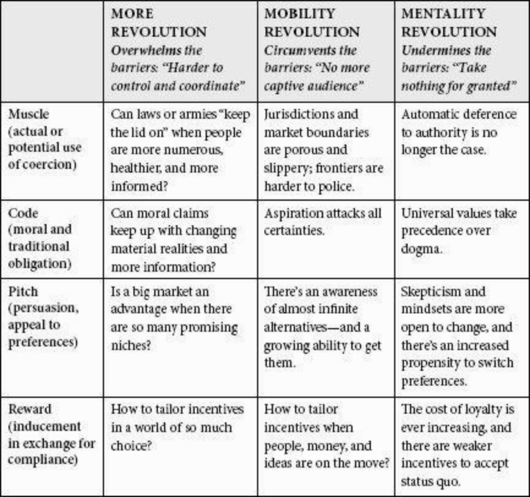

Mark Zuckerberg posts a public challenge/goal for himself at the beginning of every year and in 2015 it was to read a new book every two weeks.
“Power no longer buys as much as it did in the past. In the 21st century, power is easy to get, harder to use - and easy to lose.”
‘The End of Power’ was the first book chosen. The theme of the book is that power is not what it used to be. People in power are not as powerful as in the past and not as much as we sometimes think them to be. Power has weakened because barriers to power have reduced by the “More”, “Mobility” and “Mentality” revolution. The book makes one think about the world around us. In a way, the world has become more democratic and ordinary people have access/chance to rise to the top but when one looks at the world from the top, it is more chaotic and difficult to manage. One might choose to not get into management/leadership positions because of this.
Chapter 1 : The Decay of Power
“Power is the ability to direct or prevent the current or future actions of other groups and individuals.”
This chapter gives the example of James Black Jr., a 12 yr old from a working class family in Brooklyn, NY who becomes a Chess Grandmaster at the age of 12. It is a global trend. More players are learning the game and achieving mastery sooner than their predecesors, many of them on their own!. The reason is because the easier access to knowledge - of millions of games by other Grandmasters or computer simulation of moves, made by digital revolution and the internet. The author goes on to say that the similar trend is seen in all the other aspects of life. The chapter also gives us an overview of what the book’s is going to talk about.
Chapter 2 : Making Sense of Power: How It Works and How to Keep It
“Identify the barriers to power and whether they are coming up or going down, and you can solve a large part of the puzzle of power.”
The main theme of this chapter is extend the definition of power in the first chapter. Power is expressed through four different means - The Muscle, The Code, The Pitch, The Reward.
MacMillan’s Taxonomy of Power
| Outcome seen as improvement | Outcome seen as nonimprovement | |
|---|---|---|
| Change incentives | Inducement via reward: Increase the salary, lower a price | Coercion via muscle: Law enforcement, repression, violence |
| Change preferences | Persuasion via pitch: Advertising, campaigning | Obligation via code: Religious or traditional duty, moral suasion |
Chapter 3 : How Power Got Big: An Assumption’s Unquestioned Rise
“Weber’s central message was that without a reliable, well-functioning organization, or, to use his term, without a bureaucracy, power could not be effectively wielded.”
The main theme of this chapter is to about how companies throughout the world became huge, especially after the World War II. Huge companies could be managed only via hierarchies and bureaucracy. The author talks in depth about Max Weber, German sociologist who analyzed Western economies and wrote about bureaucracy and how it would lead to power being managed by big corporations.
Chapter 4 : How Power Lost Its Edge: The More, Mobility, and Mentality Revolutions
“The decoupling of power from size, and thus the decoupling of the capacity to use power effectively from the control of a large Weberian bureaucracy, is changing the world.”
- The More revolution - Overwhelming the means of control
- The Mobility revolution - The end of captive audiences
- The Mentality revolution - Taking nothing for granted anymore
Power and the three revolutions: 
Chapter 5 : Why Are Landslides, Majorities, and Mandates Endangered Species? The Decay of Power in National Politics
“Accordingly, the noble art of governing now depends more heavily on a much dirtier, hands-on skill: forming and maintaining a coalition.”
The main theme of this chapter is the before and after contrast of the governments across the world - number of sovereign nations has quadrupled since 1945, democracies have increased, autocracies have gone down, there are more hung parliaments now, very few landslide victories, etc.